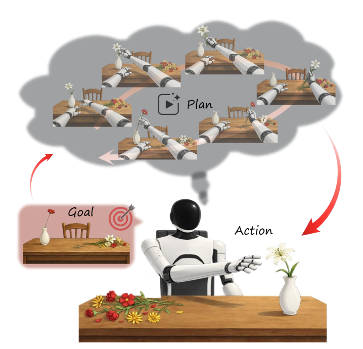
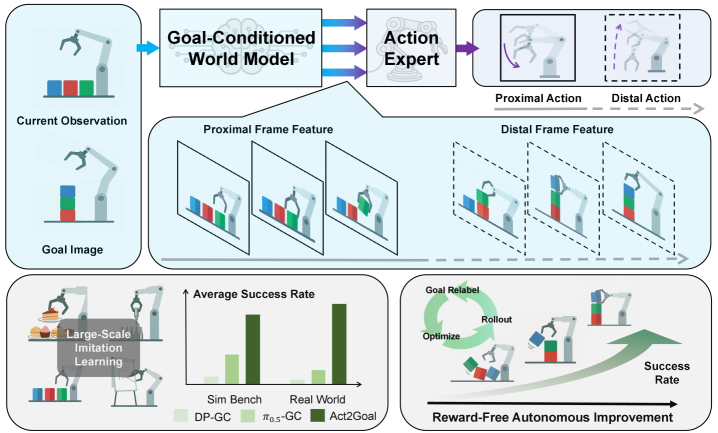
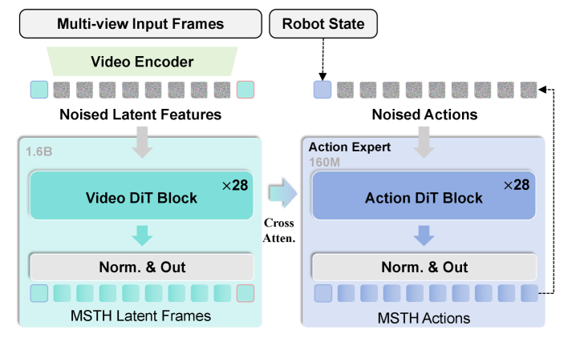
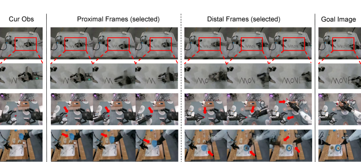
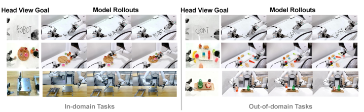
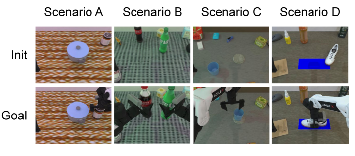
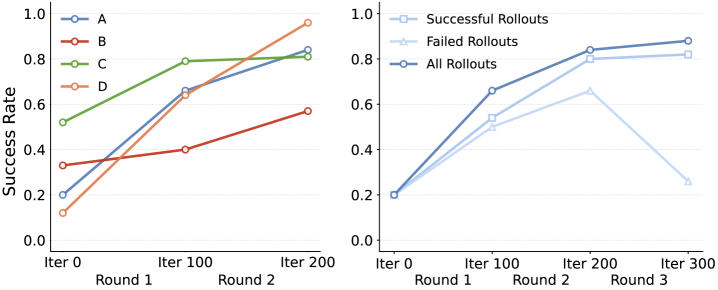
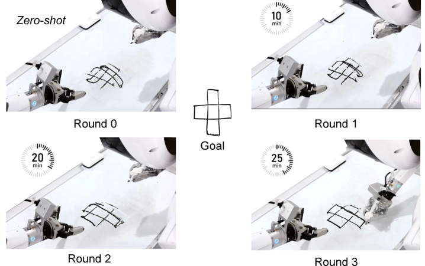

Act2Goal: From World Model To General Goal-conditioned Policy
1. 论文速览
| 论文要解决什么 | 视觉目标能比语言更精确地表达物体布局和终态约束，但现有 goal-conditioned policies 常直接做单步动作预测，缺少显式任务进展表示，长时程任务和 OOD 场景容易偏离目标。 |
|---|---|
| 作者的方法抓手 | Act2Goal 引入 Goal-Conditioned World Model (GCWM) 生成从当前观测到目标图像的中间视觉轨迹；提出 Multi-Scale Temporal Hashing (MSTH)，把轨迹拆成近端密集帧和远端稀疏帧；动作 DiT 通过逐层 cross-attention 使用 world-model features。 |
| 最重要的结果 | Robotwin 2.0 和真实 AgiBot Genie-01 任务中，Act2Goal 在大多数 ID/OOD 设置上显著高于 DP-GC、$\pi_{0.5}$-GC 和 HyperGoalNet；真实 OOD Plug-In 从离线 0.30 通过在线自改进提升到 0.90；MSTH 在白板写字长词/OOD 长词上从接近失败提升到 0.88-0.90。 |
| 阅读时要注意的点 | 这篇的关键不是“world model 生成视频很好看”，而是 generated visual trajectory 如何被时间抽样成控制可用的 representation：近端帧用于闭环精细控制，远端帧用于保持长程目标一致性。 |
难度评级：★★★★☆。需要理解 visual goal-conditioned policy、flow matching、Video DiT/3D VAE world model、action expert、hindsight goal relabeling、LoRA finetuning，以及真实机器人评估。
关键词：Goal-conditioned policy, visual world model, Multi-Scale Temporal Hashing, flow matching, action expert, HER, LoRA, online autonomous improvement。

2. 动机
2.1 为什么用视觉目标而不是语言目标
机器人操作需要任务描述既灵活又精确。语言能表达多样任务，但在细粒度操作里经常不够具体：比如“把甜点摆成这样”“写出这个词”“把插入件放到孔里”，目标的空间关系、形状、朝向和终态细节很难完全用自然语言无歧义描述。视觉目标图像直接编码物体配置、空间关系和终态约束，因此更适合 goal-conditioned manipulation。
2.2 现有 GCP 的核心短板
许多 visual goal-conditioned policies 把当前观察和目标图像直接映射到动作。短时程任务中这可行，但长时程任务要求策略持续知道“我现在离目标进展到哪一步”。如果模型没有中间进展表示，就容易只匹配训练数据中的局部 state-action pattern，在 OOD 物体、布局或长控制链中累积偏差。
论文的诊断是：GCP 需要一个显式视觉动力学模型，去预测从当前状态到目标状态之间的 plausible intermediate states。这样 action expert 不只是看终点，而是得到一条粗到细的视觉路线。
2.3 为什么还需要 MSTH
只生成一整段未来视频仍不够。长轨迹如果全都密集预测，计算成本高且远端细节未必可靠；如果只看短期，策略会反应灵敏但容易迷失远期目标。MSTH 的作用就是把时间尺度拆开：近端用 dense frames 提供局部闭环控制，远端用 logarithmic sparse frames 维持全局方向。

4. 方法详解
4.1 总体流程：三阶段学习
Act2Goal 的学习流程分三段：
- Stage 1 joint training：微调预训练 world model，使其在当前观测和目标图像条件下生成 MSTH 分布的多视角过渡视频，同时联合训练动作生成任务。
- Stage 2 action adaptation：用行为克隆端到端微调完整模型，只使用 action flow matching loss，让视觉表示更贴合动作规划。
- Stage 3 online autonomous improvement：部署后收集自身 rollout，把实际到达的下一观测 relabel 成 goal，只更新 LoRA 层。
4.2 模型架构：GCWM + Action DiT

Goal-Conditioned World Model 基于 Genie Envisioner 改造：保留视频生成能力，移除语言条件，加入视觉目标条件。当前 observation latent 记为 $z_t$，目标图像 latent 记为 $z_g$，随机噪声为 $\epsilon$，world model 生成中间 latent frames：
推理时用 flow matching 的确定性积分更新：
$$z^{(n+1)} = z^{(n)} + \frac{1}{N}v_{\theta}(z^{(n)},z_t,z_g).$$直觉：GCWM 学的是“从当前画面走向目标画面，视觉上应该经过哪些中间状态”。这些中间状态不是直接执行的动作，但会成为动作专家的条件。
Action expert 与 world model 架构同构，但宽度更小。它接收 proprioceptive state $c_p$ 和 world model 的层级 transition features $c_w=\{h_{\mathrm{world}}^1,\ldots,h_{\mathrm{world}}^L\}$，生成动作：
直觉：动作不是从目标图像单独解码出来，而是从 world model 的多层中间特征里“读出”可执行控制。
4.3 Multi-Scale Temporal Hashing (MSTH)
MSTH 是这篇论文最核心的机制。给定总想象轨迹长度 $K$、近端 horizon $P$、视觉采样 stride $r$，MSTH 把未来视觉状态拆成两段。
近端 dense segment：
$$\{s_{t+kr}\}_{k=1}^{P/r}.$$远端 sparse segment：
$$\{s_{t+d_m}\}_{m=1}^{M},\quad d_m = P + \left\lfloor \frac{K-P}{\log(M+1)}\log(m+1)\right\rfloor.$$直觉：越靠近当前，越需要高频细节；越接近远端目标，越需要粗粒度目标锚点。log spacing 让远端帧间隔逐渐增大。
动作也采用同样的多尺度结构，但有一个关键差异：近端动作是每个时间步都预测，$\{a_{t+1},\ldots,a_{t+P}\}$，用于实际执行；远端动作 $\{a_{t+d_m}\}_{m=1}^M$ 只用于长程指导，不在部署时执行。附录给出具体实现：world model 预测 4 个 latent frames，含 2 个 proximal 和 2 个 distal，经 3D VAE 解码成 9 个 proximal 和 9 个 distal visual frames；action expert 输出 54 个 proximal actions，其中执行 50 个，另输出 9 个 distal actions 仅作 guidance 附录 A.1。

4.4 两阶段离线训练目标
Stage 1 联合优化视觉生成和动作生成。视觉部分使用 flow matching loss：
动作部分为：
$$\mathcal{L}_a = \mathbb{E}_{t,a_0,a_1,c_w,c_p} \left[\left\|u_{\phi}(t,\psi_t(a),c_w,c_p)-(a_1-a_0)\right\|^2\right].$$联合目标：
$$\mathcal{L}_{\mathrm{stage1}}=\mathcal{L}_v+\lambda\mathcal{L}_a,\quad \lambda=0.1.$$Stage 2 只用 $\mathcal{L}_{\mathrm{stage2}}=\mathcal{L}_a$ 做端到端行为克隆。
这种设计的含义是：第一阶段让生成的视觉轨迹“看起来合理且对动作有用”；第二阶段把整个 pipeline 对齐到专家动作。
4.5 在线自我改进：HER + LoRA
在线阶段不需要外部 reward，也不需要人工标注成功/失败。机器人执行策略并把每一步 transition 存入 replay buffer：$(o,c_p,a,o')$。随后把实际到达的 $o'$ 作为新的 goal $g'$，构造成“在 $o$ 下执行 $a$ 可以到达 $g'$”的监督样本。buffer 达到阈值后，用这些 relabeled transitions 只微调 LoRA 层，base model 冻结。
Act2Goal online autonomous improvement: 1. initialize replay buffer B and LoRA parameters 2. execute policy for one episode and store transitions (o, c_p, a, o') 3. for each transition, relabel achieved observation o' as goal g' 4. when B reaches threshold: sample batches from B optimize action prediction toward stored action a under relabeled goal g' update only LoRA parameters clear B 5. repeat rollout -> relabel -> optimize until performance converges
附录实现细节：部署在 AgiBot Genie-01 + NVIDIA RTX 4090；LoRA rank 64；replay buffer size 20；每轮 10 epochs，包含 rollout、反传和环境 reset 约 5 分钟；50 个可执行动作的推理延迟约 200 ms 附录 A.1。
5. 实验
5.1 实验问题
实验围绕三个问题展开：离线 imitation training 后能否泛化到 ID/OOD 场景；在线 autonomous improvement 是否有效；MSTH 是否是长时程任务的关键组件。
5.2 Robotwin 2.0 仿真泛化
作者从 Robotwin 2.0 选择四个任务：Move Can Pot、Pick Dual Bottles、Place Empty Cup、Place Shoe。Easy mode 是 seen/no-noise 设置，Hard mode 是 unseen/noisy 设置。目标图像通过固定环境 seed，从成功轨迹中提取终态作为 goal condition。
| Mode | Model | Move Can | Pick Bottles | Place Cup | Place Shoe |
|---|---|---|---|---|---|
| Easy | DP-GC | 0.18 | 0.04 | 0.03 | 0.04 |
| $\pi_{0.5}$-GC | 0.54 | 0.13 | 0.16 | 0.30 | |
| HyperGoalNet | 0.11 | 0.08 | 0.08 | 0.01 | |
| Act2Goal | 0.62 | 0.80 | 0.64 | 0.52 | |
| Hard | DP-GC | 0.00 | 0.00 | 0.00 | 0.00 |
| $\pi_{0.5}$-GC | 0.42 | 0.06 | 0.04 | 0.06 | |
| HyperGoalNet | 0.00 | 0.00 | 0.00 | 0.00 | |
| Act2Goal | 0.13 | 0.43 | 0.13 | 0.15 |
Act2Goal 在所有 Easy 任务最佳；Hard mode 中除 Move Can 外都最佳。这个结果支持论文主张：world model + MSTH 对 OOD 长时程场景有帮助，但也显示并非所有 hard scenario 都赢过 $\pi_{0.5}$-GC。
5.3 真实机器人泛化

| Setting | Model | Whiteboard Word Writing | Dessert Plating | Plug-In Operation |
|---|---|---|---|---|
| ID | DP-GC | 0.00 | 0.10 | 0.00 |
| $\pi_{0.5}$-GC | 0.23 | 0.18 | 0.00 | |
| HyperGoalNet | 0.00 | 0.08 | 0.00 | |
| Act2Goal | 0.93 | 0.75 | 0.45 | |
| OOD | DP-GC | 0.00 | 0.00 | 0.00 |
| $\pi_{0.5}$-GC | 0.20 | 0.05 | 0.00 | |
| HyperGoalNet | 0.00 | 0.00 | 0.00 | |
| Act2Goal | 0.90 | 0.48 | 0.30 |
三类任务分别考察不同能力：白板写字要求长程笔画组合，OOD 是训练未见词；甜点摆盘要求按目标图像进行细粒度空间布置，OOD 引入甜点类型、盘子样式和背景变化；Plug-In ID 是插入训练见过的金属工件，OOD 是把圆柱饮料瓶插入杯架。
附录补充真实任务细节：写字/绘画时先人工把 marker 放到夹爪中，长写字 trials 中 marker 会滑动，因此用胶带固定；bearing insertion 中 bearing 超过 2 kg，底部直径约 1 cm，孔直径约 1.5 cm；甜点摆盘使用硅胶玩具甜点以保证可重复性 附录 A.2。
5.4 在线自我改进


仿真中，作者从四个 hard-mode 任务各选一个 scenario 做多轮在线训练。论文正文给出定性结论：约 3 轮后收敛，最大成功率提升可达预训练 baseline 的 8 倍；使用所有 rollouts 优于只用 successful 或 failed rollouts。这个结果与 HER 逻辑一致：失败轨迹也含有可学习的 achieved-goal transition。

5.5 MSTH 消融
| Setting | Model | Short (≤3 letters) | Medium (4-6 letters) | Long (≥7 letters) |
|---|---|---|---|---|
| ID | w/o MSTH | 0.95 | 0.35 | 0.10 |
| w/ MSTH | 0.95 | 0.90 | 0.90 | |
| OOD | w/o MSTH | 0.60 | 0.20 | 0.00 |
| w/ MSTH | 0.93 | 0.90 | 0.88 |
这个表是支撑 MSTH 的最强证据：短词上固定 horizon chunking 还可以，但词变长后迅速崩溃，尤其 OOD 长词为 0.00；MSTH 则在 ID/OOD 中长词仍保持 0.90/0.88。解释是固定 horizon 更容易随着序列变长发生 goal confusion，而 MSTH 的远端稀疏锚点维持了目标方向。
6. 可复现审计
6.1 数据、训练资源与模型规模
| 项目 | 论文/附录信息 | 复现含义 |
|---|---|---|
| 训练数据 | AgiBot World dataset + small proprietary dataset。 | 核心真实数据不完全公开，严格复现实验难度高。 |
| world model 初始化 | 预训练 1.6B 参数 Genie Envisioner。 | 需要可用的 Genie Envisioner 权重或等价视频 world model。 |
| Stage 1 | 微调预训练 world model，7×24 hours，16×A800。 | 计算量很大，不是单卡可轻松复现。 |
| Stage 2 | 端到端 behavioral cloning，48 hours，16×A800。 | 离线训练资源仍然高。 |
| 部署 | AgiBot Genie-01 + RTX 4090；50 executable actions 延迟 200 ms。 | 推理部署给出较清晰硬件口径。 |
| 在线学习 | LoRA rank 64，buffer size 20，每轮 10 epochs，约 5 分钟。 | 在线阶段相对轻量，可作为最先复现的模块。 |
6.2 评估口径
- 真实世界成功率由人工标注，每个实验 40 个 model rollouts。
- 仿真成功率自动计算，每个实验 90 个 rollouts。
- 在线自改进实验中，作者保存每轮训练后的模型权重，在线过程结束后分别评估这些 checkpoints。
6.3 最小复现路线
- 先在仿真中实现视觉 goal-conditioned policy baseline：当前图像 + goal image + proprio state → action chunk。
- 接入一个预训练 video/world model，改成 current observation + goal image condition，输出过渡 latent frames。
- 实现 MSTH：近端 dense frames、远端 log-spaced distal frames；动作端预测 dense proximal actions + sparse distal guidance actions。
- 用 Stage 1 的 $\mathcal{L}_v + 0.1\mathcal{L}_a$ 联合训练，再用 Stage 2 的 $\mathcal{L}_a$ 做动作适配。
- 先复现 Robotwin 2.0 的四个任务；真实机复现需要机器人平台、目标图像采集和安全 reset pipeline。
- 最后实现在线 HER + LoRA：buffer 到 20 后训练 10 epochs，只更新 LoRA，比较 all/success/failure rollout 策略。
6.4 主要复现风险
| 风险 | 原因 | 建议 |
|---|---|---|
| 数据不可完全获得 | 训练依赖 AgiBot World 和 proprietary data。 | 先用公开仿真数据验证 MSTH/online adaptation，而不是追求绝对数值。 |
| world model 成本高 | 1.6B Genie Envisioner + 16×A800 训练。 | 用更小视频 latent diffusion/world model 做结构复现。 |
| 真实机 setup 细节影响结果 | marker 固定、bearing 尺寸、硅胶甜点都影响实验可重复性。 | 记录 end-effector/tool mounting、物体材质、初始位置和 reset 策略。 |
| 在线学习安全 | 自收集 rollouts 可能产生碰撞或错误动作。 | 先在仿真部署 replay relabeling，再迁移到低风险真实任务。 |
7. 分析、局限与边界
7.1 这篇论文最有价值的地方
这篇最有价值的地方在于把视觉目标策略的长时程问题具体化了：不是只让 policy 看 goal image，而是先构造一条“朝 goal 演化”的视觉中间路线，再把这条路线压缩成控制友好的多尺度表示。MSTH 的想法朴素但有效：近处要密，远处要稀；近端动作执行，远端动作只做约束。
第二个价值点是在线自我改进流程足够工程化。HER-style relabeling + LoRA 在真实机器人上很实用：不需要 reward function，也不需要每一步人工打标签，失败轨迹也可以通过 achieved-goal relabeling 转为训练信号。
7.2 结果为什么站得住
- 任务覆盖有层次：仿真 Robotwin 2.0、真实写字、甜点摆盘、插入操作分别覆盖不同难点。
- OOD 设置明确：未见词、视觉变化甜点/盘子/背景、从 bearing 插入迁移到杯架插瓶。
- MSTH 消融强：白板写字长词上 w/o MSTH 几乎失败，而 w/ MSTH 保持高成功率，直接支撑方法核心。
- 在线训练证据一致：仿真多轮提升、真实 unseen drawing 改善、Plug-In OOD 从 0.30 到 0.90，方向一致。
7.3 局限与需要追问的点
| 问题 | 影响 |
|---|---|
| 训练数据和代码可用性不足 | 论文给项目页但 arXiv/项目页未显示公开代码；核心训练数据含 proprietary dataset，完全复现困难。 |
| 部分源码仍含作者内部注释 | LaTeX 源码里有较多修改意见和注释，说明论文可能仍处于快速迭代状态；读者应以最终 PDF 结果为准。 |
| 真实世界评估样本量有限 | 每个真实实验 40 rollouts，足够展示趋势，但对高方差真实机任务仍需更多统计置信区间。 |
| world model 是否真正因果可控仍未完全证明 | 生成的中间视觉轨迹看起来合理，但它对动作成功的具体贡献主要通过整体消融体现，缺少更细的 representation/attention 分析。 |
| 在线自改进依赖环境 reset | 每轮约 5 分钟包含 rollout、反传和 reset；真实开放环境中 reset 成本可能成为瓶颈。 |
7.4 组会可追问的问题
- MSTH 的 $K,P,r,M$ 如何选择？不同任务是否需要自适应时间尺度，而不是固定 log spacing？
- 远端 actions 不执行，只作为 guidance。它们的 supervision 来自哪里，是否可能和近端执行动作产生冲突？
- Stage 2 只优化 action loss，但梯度也回传到 world model。这会不会降低 world model 生成视频的真实性，只保留 action-useful features？这是优点还是风险？
- HER relabeling 把 $o'$ 当 goal，但如果动作导致了碰撞或无意义状态，这种 relabeling 是否会强化坏行为？all rollouts 最好说明模型可能能吸收噪声，但边界在哪里？
- 相比直接用 goal image + transformer memory 做长上下文控制，GCWM 的额外生成成本是否在所有任务上都必要？
附：本报告覆盖检查
已覆盖：Abstract、Introduction、Related Works、Method、Experiments、Conclusion，以及附录中的实现细节、真实任务设置和测试指标。
图表处理：使用 arXiv HTML 渲染出的 PNG 图像保存在 figures/；关键表格已重建为 HTML。
残余风险：未发现官方代码仓库；训练数据部分为 proprietary，报告中的复现路线是结构级复现建议，不等价于完整数值复现。